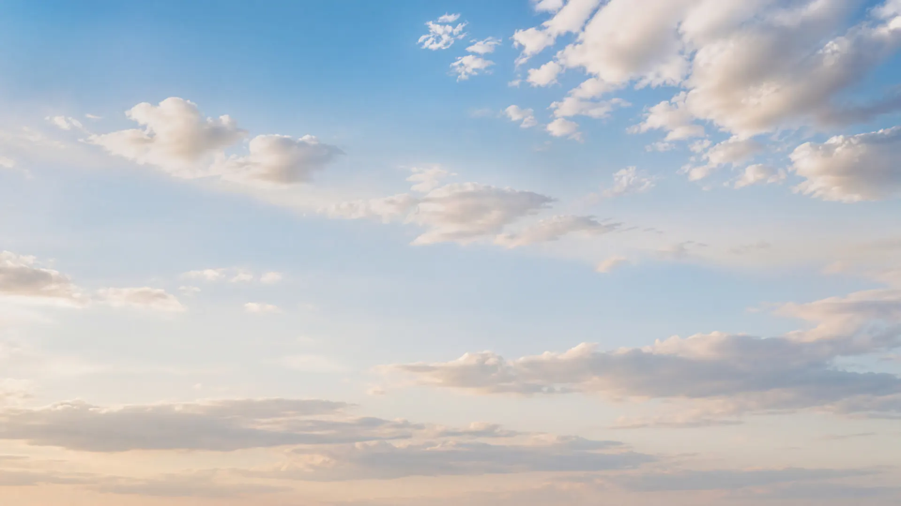
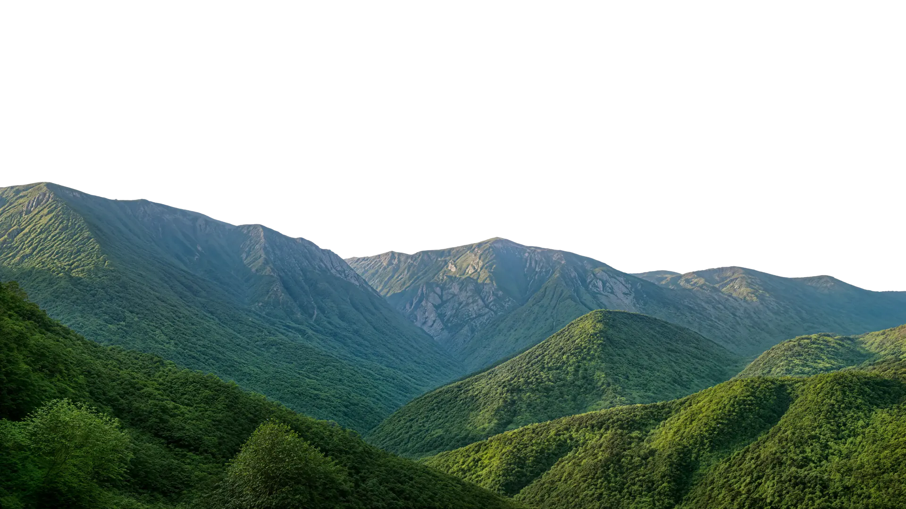
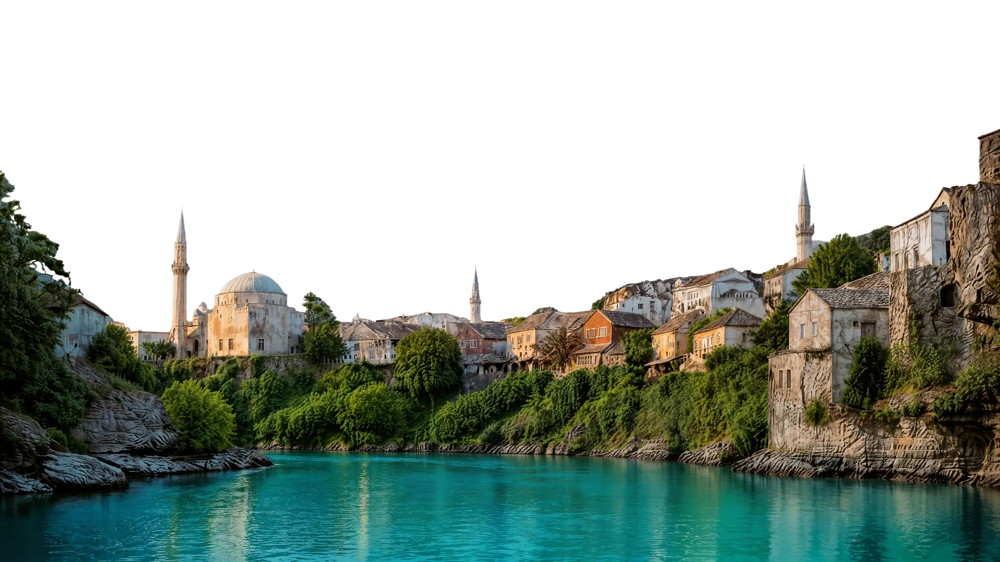
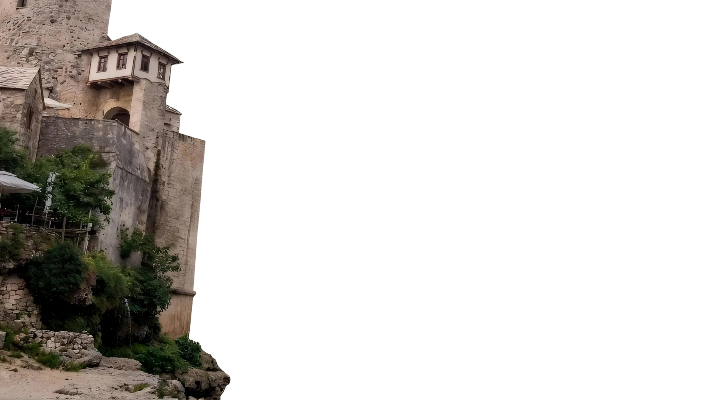
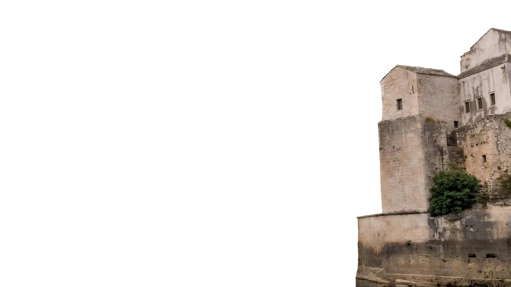
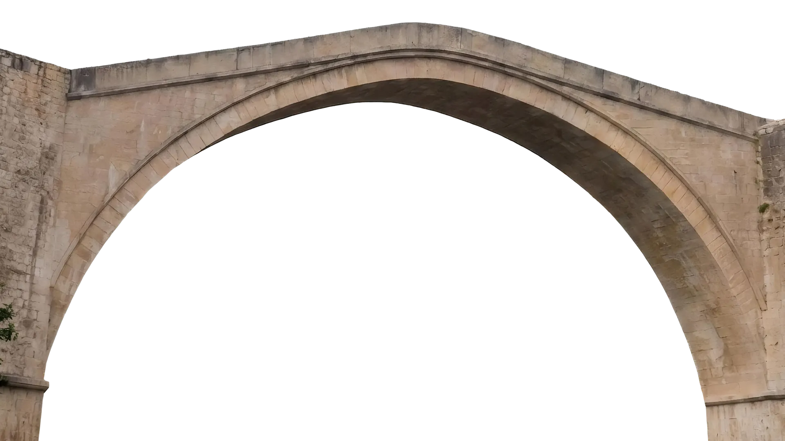
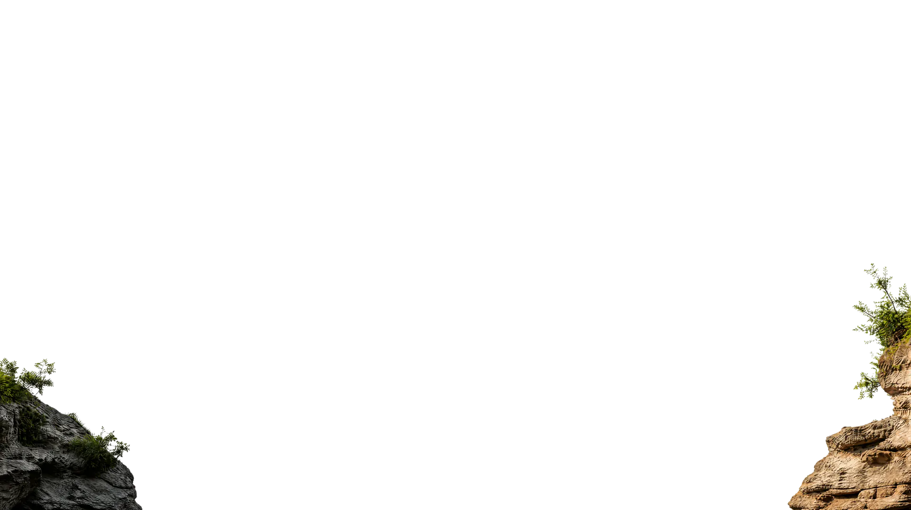

Stari Most
O arco de pedra sobre o Neretva, símbolo de Mostar.







Conheça cidades medievais, vilarejos pitorescos e uma atmosfera sem igual.
Um arco de pedra, águas cor de esmeralda e um centro histórico compacto, feito para manhãs sem pressa, a luz do fim de tarde e uma travessia inesquecível.
A Stari Most liga as margens do Neretva e ancora um bairro histórico moldado por camadas otomanas, mediterrâneas e europeias.
Vielas de pedra, pátios de mesquitas, bancas de cobre e cafés à beira do rio ficam a poucos passos da Stari Most.
Ver pontos da cidade velha